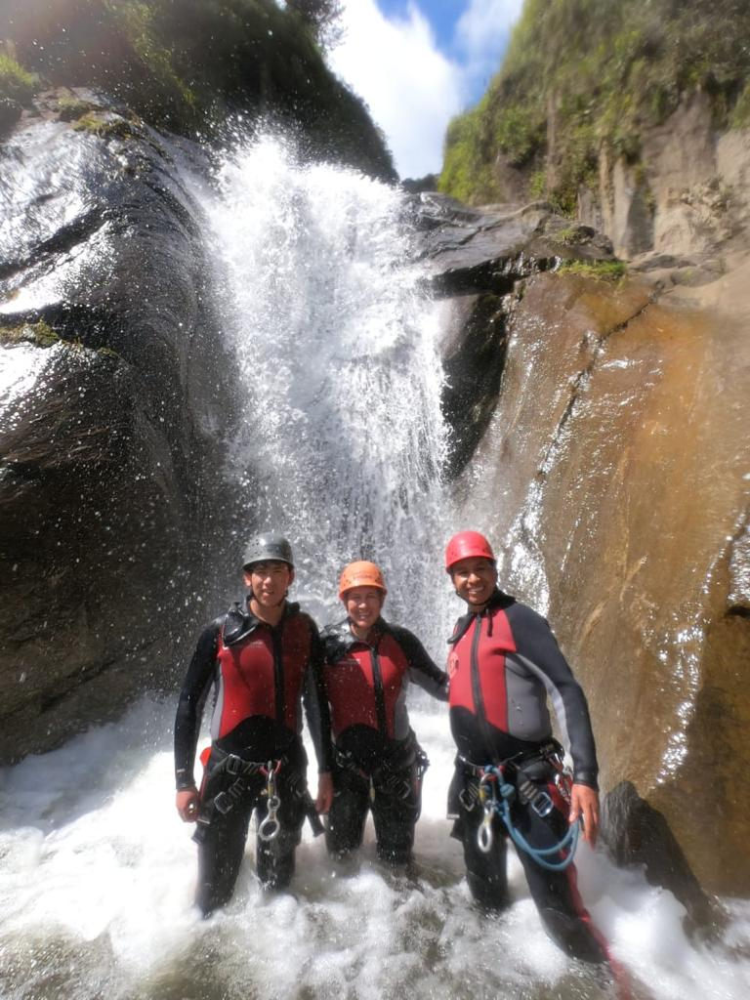
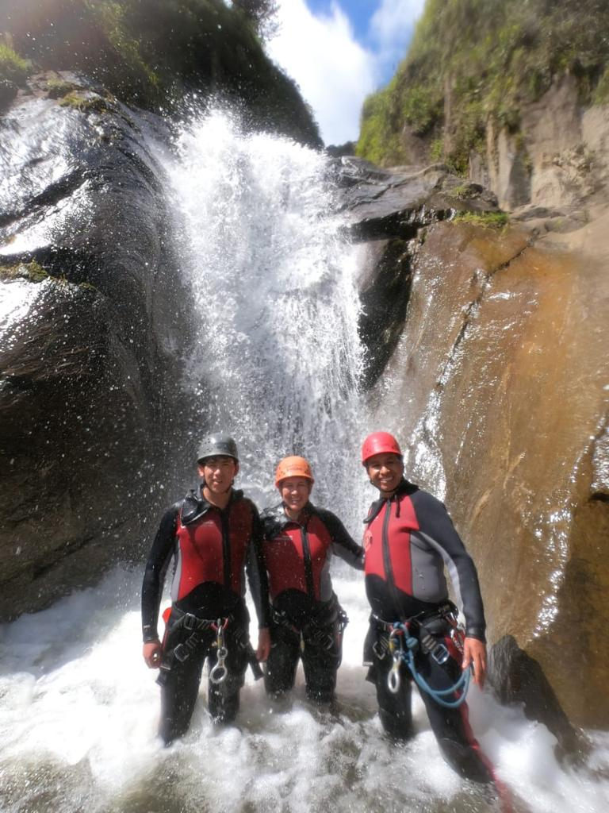
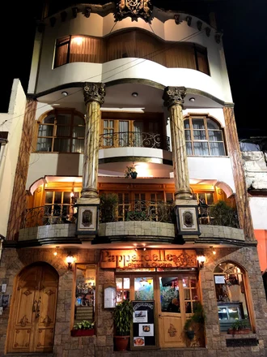
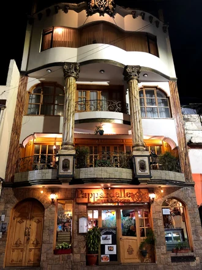

A little of what I lived and visited during my time in Baños, these three first photos are about my family, the first photo is my family in the top of the mountain, a placed with food, amazing view, an extreme swing, we visited it at night, was beautiful, but at day it could have been better. For the second image we have a wood and metal condor in the background (symbol of Ecuador's moutains and part of the national emblem.) And the last one is me and my family at the end of waterfall, we practiced canyoning which is kind of an extreme sport, we enjoyed it and we get to knew a lot of people from many parts of the world.
Personal Experience
 

In these three images you can see that the first two are from a hotel, this is the hote that I stayed in it is Hotel Santa Clara, it wasn't too expensive, the rooms were nice and well cleaned, parking, tv cable, close to the center of Baños, you have a park in front of the hotel and it is not too far from any thing really. The people and the service are very good, there is man that we can say that he is the host, a very carismatic person, the food was exquisite, and the zone is pretty nice. At the third picture we can see a restaurant, a pizza place, traditional pizza, still the place is very fine, they combine pizza and cuisine with style, a good wine cellar, the prices a little to high, but good service and not far from the center of the city.